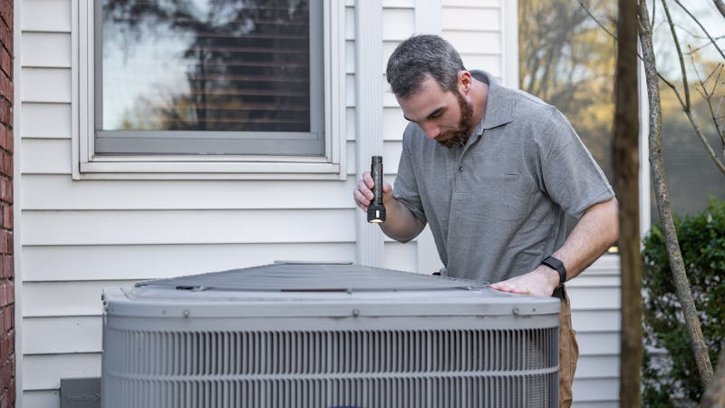

7 Tanda AC Perlu Service yang Wajib Diketahui

Banyak orang baru menyadari AC bermasalah ketika sudah terlambat. Kenali 7 tanda ini agar Anda bisa bertindak cepat dan menghemat biaya perbaikan.
AC Tidak Dingin Maksimal
Meskipun sudah diatur ke suhu最低 16°C, AC tidak Feeling dingin seperti biasa. Ini tanda umum refrigerant berkurang atau ada masalah pada kompressor.
Mata Air dari Unit Indoor
Air yang menetes atau rembesan dari unit indoor bisa menjadi saluran pembuangan tersumbat atau kebocoran pada sistem pendingin. Segeraatasi untuk mencegah kerusakan lebih lanjut.
Suara Tidak Normal
Ada suara dengungan keras, gemeretakan, atau suara teknis lain dari unit indoor maupun outdoor. Ini indican komponen internal sudah aus atau longgar.
Tagihan Listrik Melonjak
Jika tagihan listrik naik signifikan tanpa perubahan penggunaan, AC Anda mungkin sudah tidak efisien dan bekerja lebih keras dari seharusnya.
AC Sering Trip/Mati Sendiri
AC yang terus mati sendiri biasanya ada masalah pada sensor,overload, atau sistem kelistrikan. Jangan dipaksakan menyala karena bisa Parah.
Bau Tidak Sedap
Bau apek, jamur, atau bau chemical dari AC Indicates contaminasi di dalam unit. Selain tidak sehat, juga bisa tanda kerusakan.
Performin Tidak Stabil
AC hidup mati sendiri, airflow tidak stabil, atau suhu tidak konsisten. Ini sistem kontrol yang bermasalah.
Jangan Tunda ServiceAC!
Menunda service AC Parah biaya lebih besar. Jika ada 2 atau lebih tanda di atas, Segera hubungi teknisi.
AC Anda Sudah Menunjukkan Tanda-Tanda Ini?
Segera booking serviceAC profesional dari AClean.
Chat via WhatsApp →